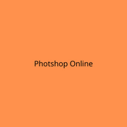

Новый бесплатный адоб фотошоп онлайн на русском языке с эффектами — используйте без регистрации! Этот фоторедактор повторяет ps cs6 — в нем легко сделать монтаж (замена лица на фотографии, корректировка волос). Может вам нужен эффект похудения, например убрать бока и живот? Или сделать замену фона и вставить себя другой фон? Как в фотошоп онлайн эти эффекты монтажа применить — смотрите в уроках. Если у вас есть какие-либо вопросы, по работе в программе — пишите в комментариях ниже, авторы обязательно на них ответят!